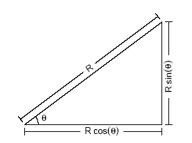

RADAR Plot
일러두기
2005-04-19 네이버 블로그에 게시된 내용을 옮겨 온 글입니다. 지금의 R 환경과 다소 내용이 다를 수 있음을 밝여둡니다.
Graphics Development - RADAR Plot
90년대 초 S-PLUS라는 놈을 처음 접했을 때 가장 매료되었던 부분은 미려한 Graphic의 출력물과 다양한 프로그램으로 원하는 Graph를 그릴 수 있다는 점이 었다. 개인적으로 C 언어를 즐겨 사용했던 시절이라 S 언어의 Script 프로그램은 그리 부담이 가지 않았었다.
SAS는 Procedure 중심의 절차적인 언어라 정해진 Procedure의 틀안에서만 움직여야 했다. 물론 IML을 이용해서 조금은 융통성이 있는 노력을 시도한 적은 있지만…
그러나 근 십년이 넘었고, 개인적으로 그 후 SAS를 사용하지 않았기 때문에 십 여년의 전 기준으로 두 언어를 비교할 수는 없다. SAS도 나름대로의 강점이 있다고는 생각하기 때문이다. 하지만 S 언어는 Linux 시스템처럼 생각하는 것은 다 구현할 수있는 자유로움을 선사해 주었으며, 이점은 SAS를 비롯한 다른 통계 언어가 따라 오지 못하는 독보적인 영역이라 생각한다.
R과 S-PLUS도 비교의 여지는 있다. 공개 프로그램이냐, 상업적인 프로그램이냐의 성격도 중요한 점이다. 개인적으로는 HP-UX나 Sun OS의 UNIX냐 LINUX냐의 차이점과 유사하다고 생각한다.
상용 vs 공개, Commercial 라이브러리 vs 다양한 3-Party의 라이브러리
이번에는 이정도까지만 하자. 90년대 초에는 어둠의 S-PLUS를 사용했고 근래에는 1개월 짜리 Trial Version의 S-PLUS를 사용하다보니 짧은 기간 안에 S-PLUS에 대해 섭렵하기는 어렵고 다분히 주관적인 비교만 가능할 뿐이다. 그래서 그냥 고민 없이 R을 쓰고 있기는 하다.
미안한 점은 여기에 실리는 script가 S-PLUS에서 제대로 돌아가느냐 하는 점이다. 물론 R의 확장 라이브러리는 S-PLUS에서 안돌아 갈 수도 있으며, Porting이 필요한 부분이 있겠다. 그러나 S Language의 Base로 작성된 부분은 동일하게 작동이 되거나 일부의 수정을 전제로 작동이 가능 할 것이다. 그래도 여전히 R & S-PLUS라는 Category에 Blog을 연재하기로 한다.
그리고 R의 버젼은 2.1.0을 기준으로 작성하였음을 밝혀둔다. 아마 2.0 이전 버전을 사용할 경우 Mosaic Plot을 설명할 때, hcl function이 작동하지 않았을 것이다. hcl은 2.1.0의 grDevices package에 포함된 function인데 2.0 이전에는 이 패키지가 기본 패키지가 아니었기 때문이다. 물론 이 패키지를 library 함수 등을 써서 사용할 수는 있다.
예제
각설하고, 이번에는 RADAR Plot을 한번 만들어 보자. 2003년도 모 회사에 근무할 적에 실제 사용했던 Plot이다.
RADAR Plot은 특정 그룹의 성격을 설명하는 N개의 변수의 점수분포를 비교하는 그림이다. 단위 그룹별로 각각의 변수의 관계를 볼 수도 있고, 여러 개의 그룹의 차이도 비교할 수 있는 그림이다. 다변량 분석에서 사용하는 Star Plot과도 유사한 그림이라 하겠다.
그러면 예제 그림을 한번 보자.
2001년, 2002년, 2003년도의 자료를 가지고 ACR, AHT, ASA, MCR, OCR, AAR의 점수를 비교한 그림이다. ACR, AHT, ASA, MCR, OCR, AAR에 대해서는 알 필요가 없을 듯하다. 일단 RADAR Plot이 뭔가 하는 것만 이해 하면 된다.
다음이 위 RADAR Plot을 그리는 function을 비롯한 R Script이다.
> my.radar <- function (score, legends, labels)
+ {
+ par(mfrow = c(1, 1), pty = 's', mar = c(2, 4, 2, 4))
+ plot(c(-2.5, 2.5), c(-2.5, 2.5), type = 'n', axes = FALSE,
+ xlab = '', ylab = '')
+
+ angle <- (0:60) / 60 * 2 * pi
+
+ x1 <- cos(angle)
+ y1 <- sin(angle)
+ x2 <- 2 * cos(angle)
+ y2 <- 2 * sin(angle)
+
+ lines(x1, y1)
+ lines(x2, y2)
+
+ x <- rep(0,6)
+ y <- rep(0,6)
+
+ for (i in 1:nrow(score)) {
+ for (j in 0:5) {
+ lines(c(0, x2[j * 10 + 1]), c(0, y2[j * 10 + 1]))
+ x[j + 1] <- 2 * score[i, j + 1]/ 10 * cos(angle[j * 10 + 1])
+ y[j + 1] <- 2 * score[i, j + 1]/ 10 * sin(angle[j * 10 + 1])
+ }
+ points(x, y, pch = 18, col = i + 1)
+ lines(x, y, col = i + 1, lty = i)
+ lines(c(x[1], x[6]), c(y[1], y[6]), col = i + 1, lty = i)
+ }
+ text(x2[1] + 0.3, y2[1], labels[1])
+ text(x2[11] + 0.2, y2[11] + 0.2, labels[2])
+ text(x2[21] - 0.2, y2[21] + 0.2, labels[3])
+ text(x2[31] - 0.4, y2[31], labels[4])
+ text(x2[41] - 0.2, y2[41]- 0.2, labels[5])
+ text(x2[51] + 0.2, y2[51]- 0.2, labels[6])
+
+ title("Radar Diagram for Center Performance")
+ legend("topright", legends, lty = 1:length(legends), bty = "n",
+ col = 2:length(legends) + 1, cex = .8)
+ }
>
> labels <- c('ASA', 'AHT', 'ACR', 'AAR', 'OCR', 'MCR')
> score <- matrix(c(4, 6, 3, 8, 7, 9, 5, 4, 8, 9, 10, 7, 5, 5, 7, 8, 6, 7),
+ nrow = 3, byrow = TRUE)
> legends <- c('200211', '200212', '200301')
> my.radar(score, legends, labels)
수식의 이해
이 Chart에서의 핵심은 원을 그리는 부분이라 할 수 있다. 그러면 R을 이용해서 원을 그리는 방법에 대해서 알아 보자.
방법의 핵심은 “원이 한 점에서 동일한 거리에 있는 점들의 집합이다.” 라는 것을 이용하는 것이다. 즉, 한 점(원점)에서 거리가 R(반지름)인 집합을 만들어 선으로 이으면 될 것이다. 그리고 무수히 많은 점의 좌표를 구하는 것이 아니라 단지 몇 개의 점의 좌표를 구한 후 선을 잇는 것도 핵심이다. 무수히 많은 좌표가 아니라 어느 정도 많은 좌표를 구한 다음에 선으로 잇는 방법을 택하기로 한다. 어찌보면 점들의 수는 다다익선이 아니라 어느 정도 원의 모양새가 갖추어질 정도의 수가 되겠다.
그러면 어떻게 점의 좌표를 구할 수 있을까?
직각 삼각형에서의 밑변의 길이와 높이를 구하는 공식을 고등학교 때 배운 적이 있을 것이다. 원점을 기준으로 밑변의 길가 x-축의 좌표이고, 원점을 기준으로 높이가 y-축의 좌표인 것이다.

Figure 1: 삼각함수
그리고 원의 각도는 \(2\times\pi\) 라디안이므로 \(2\times\pi\)를 n개로 나누면 n개의 꼭지점을 갖는 다각형을 만들 수 있으며, 그 점의 갯수가 일정량을 넘으면 원처럼 보이는 것이다. 앞의 예제에서는 n을 60으로 나누었으며, 실제로 그 다각형은 우리의 눈으로 볼 경우 원으로 보여지게 된다. 물론 원으로 보일 정도가 되려면 반지름인 R이 커지면 N의 수도 그 이상으로 커져야 됨은 자명한 일이다.
원으로의 수렴
그럼 n의 크기에 따른 다각형이 원에 근접하는 것을 실험해 보자.
다음과 같은 Function을 만들었다.
> circle <- function (n)
+ {
+ par(pty = 's')
+ plot(c(-2.5, 2.5), c(-2.5, 2.5), type = 'n', axes = FALSE, xlab = '', ylab = '')
+
+ angle <- (0:n) / n * 2 * pi
+
+ x1 <- cos(angle)
+ y1 <- sin(angle)
+ x2 <- 2 * cos(angle)
+ y2 <- 2 * sin(angle)
+
+ lines(x1, y1)
+ lines(x2, y2)
+ title(paste(paste(paste("Angle is", round(2 * pi / n, digit = 1)),
+ " Pi Radian\nPoint is"), n))
+ }
>
>
> par(mfrow = c(2, 2), mar = c(1, 1, 4, 1))
> circle(10)
> circle(20)
> circle(30)
> circle(40)
N의 갯수가 20을 넘어서도 마치 원처럼 보인다.
RADAR Plot
다음은 R의 창시자인 Ross Ihaka의 뉴질랜드 auckland 대학에서 강의한 한 통계학 강의에서 출제된 2003년 8월 기말고사의 모범답안의 예로 RADAR Plot의 이야기를 마치기로 한다.
> # 빈좌표를 그린다.
> plot.new()
> par(mar = rep(0.1, 4))
> plot.window(xlim = c(-25, 25), ylim = c(-25, 25), asp = 1)
>
> # 회색의 다각형을 만든다.
> temp = c(4, 4.8, 6.4, 9, 12, 15.4, 17.5, 16.9, 15, 10.4, 6.8, 4.6)
> theta <- seq(0, length = 12, by = 2 * pi/12)
> x = temp * cos(theta)
> y = temp * sin(theta)
> polygon(x, y, col = "lightgray")
>
> # 12개의 기준선(파선)을 그린다.
> segments(0, 0, 20 * cos(theta), 20 * sin(theta), lty = "dotted")
>
> # 원을 그린다.
> segments(0, 0, 20 * cos(theta), 20 * sin(theta), lty = "dotted")
> phi = seq(3, 360 - 3, length = 72) * (pi/180)
> for (r in c(5, 10, 15)) lines(r * cos(phi), r * sin(phi), lty = "dotted")
> lines(20 * cos(phi), 20 * sin(phi))
>
> # 12월도 Text를 출력한다.
> text(24 * cos(theta), 23 * sin(theta), month.abb)
>
> # 기준점수 Text를 출력한다.
> labs = seq(5, 20, by = 5)
> text(labs, rep(0, length(labs)), labs)